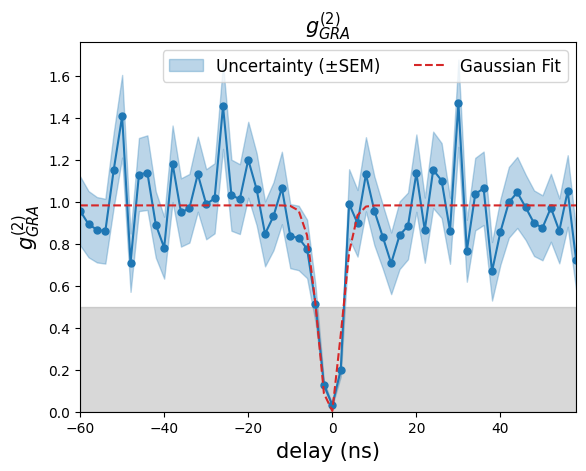
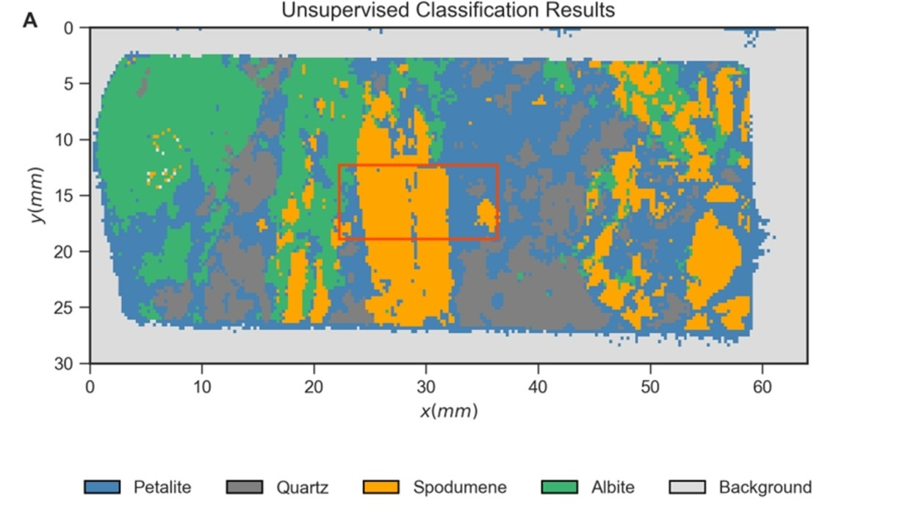

Paraxial Fluids of Light
We use laser beams in nonlinear optical media to create analogues of quantum fluids. This lets us simulate complex phenomena like superfluidity and turbulence with light. Our goal is to build versatile, accessible platforms for analogue quantum simulations.
- Research Focus: Analogue Quantum Turbulence, Topological Paraxial fluids of light
- Coordinators: Dr. Nuno A. Silva and Dr. Tiago D. Ferreira
- Location: FCUP, FC3 - 335
View Laboratory

Optical Computing and Sensing in Complex Media
We design and build systems that harness the physics of light to perform high-speed, energy-efficient computations, exploring new architectures for all-optical processing and machine learning, such as extreme learning machines, reservoir computing and diffractive neural networks. We also try to use the formalism from the optical computing setups to enhance the performance of optical sensors.
- Research Focus: Extreme Learning Machines, Reservoir Computing, Enhanced Optical Sensors
- Coordinators: Dr. Nuno A. Silva and Dr. Tiago D. Ferreira
- Location: FCUP, FC3 - 335
View Laboratory

Quantum Imaging and Sensing
By harnessing Hong-Ou-Mandel interference and undetected photons, our lab develops advanced quantum imaging and sensing. Subtle correlations exceed classical measurement limits without direct photon detection, minimizing disturbance and enabling low-light, noninvasive microscopy, spectroscopy, and next-generation metrology.
- Research Focus: Quantum Imaging with Hong-Ou-Mandel and Undetected Photons
- Coordinators: Dr. Nuno A. Silva and Dr. Tiago D. Ferreira
- Location: FCUP, FC3 - 335
View Laboratory

Spectral Imaging
The Biomedical Engineering Laboratory focuses on developing innovative medical devices, biomaterials, and healthcare technologies to address critical health challenges. Our multidisciplinary team combines engineering principles with medical science.
- Research Focus: LIBS, X-Ray Analysis, Virtual Reality
- Laboratory Director: Dr. Nuno A. Silva, Dr. Diana Guimarães, Dr. Pedro Jorge
- Location: FCUP, FC3 - -1
View Laboratory